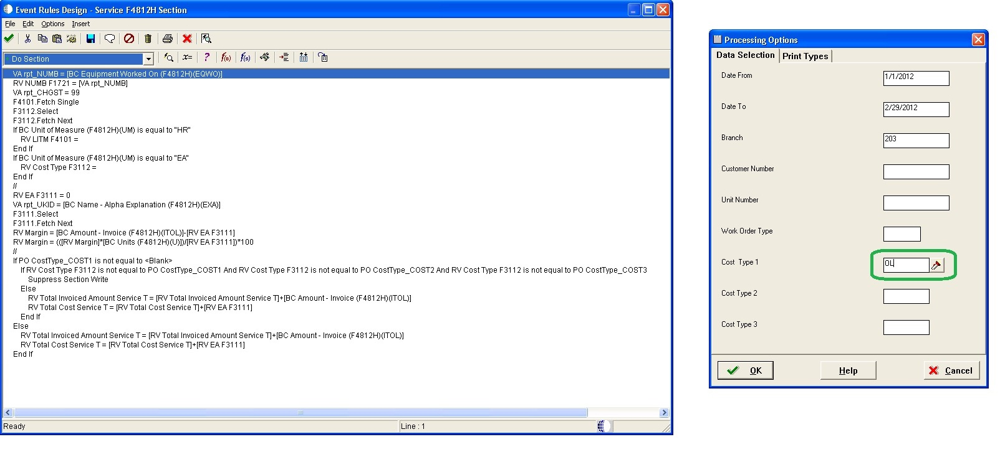

PROJECTS
Titan Machinery ERP - JD Edwards Oracle
After I graduated from Minnesota State University Moorhead in 2009, I started working for Titan Machinery as an IT Help Desk technician.
After one year, I was promoted to System Analyst for their new ERP Oracle System - JD Edwards Enterprise One.
The previous ERP system, “DIS Keystone,” didn't meet the demands of their growing business, so the company decided to replace it with a more advanced ERP solution. The implementation and rollout of the new ERP system consisted of the following stages:
1) Analysis of business processes, identification of problem areas to improve (automate) and requirements documentation.
2) System design, planing of its implementation and writing of technical specifications
3) Development, deployment and configuration of the new ERP system. The company began the transition of their ERP system from its key departments - accounting, finance, operations, parts and service. Once the system was deployed in the main departments it was rolled out to all other areas of the company's business.
4) The roll out of the system to all company stores and adjustment (improvement) of the system according to company needs.
During the system rollout, I also developed JD Edwards Reports and Applications. When working on development, I followed this process:
1) Elicitate requirements from stakeholders and analyze JD Edwards System
2) Analyze data, identify required tables and created business views
3) Write technical documentation - JDE Report Design Specification
4) develop JD Reports and Application using JDE tools:
Object Management Workbench
Business Functions
Named Event Rules
